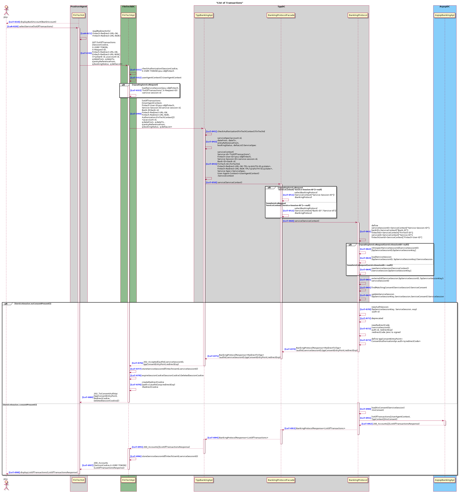

List Of Transactions
General terms defined in the dictionary
Definition
Request the list of transactions for a given bank account.
If there is any reference to an existing account information consent (AisConsent) stored in the database of the TPP, the TPP will use this consent reference to forward the service request to the OpenBanking interface of the ASPSP.
If there is no such reference in the database of the TPP, the TPP will respond the FinTech to redirect the PSU to the ConsentAuthorizationApi of the TPP.
In order to uniquely identify the requesting PSU, the TPP uses a unique reference made out of: - the fintechId : the unique identifier of this FinTech in the realm of the TPP. This parameter is read from the FinTechContext transported as jwt-Token in the Authorization header of each FinTech request to the TPP. - the psu-id@fintech : the unique identifier of the PSU in the realm of the FinTech. This parameter is transported in the HttpHeader named: Fintech-User-ID
Diagram

Use Cases
LoT-010 FinTechUI.displayBankAccount(BankAccount)
After receiving the list of accounts, the FinTechUI can dsiplay a single bank account to the PSU.
LoT-020 : FinTechUI.selectService(listTransactions)
On of the services available when the FinTechUI present bank account details to the PSU is the "listOfTransactions". If selected by the PSU, the FinTechUI forwards the service call to the FinTechApi. The selection must be accompanied with some mandatory and optional service specifications. For example in the case of listOfTransactions, this the account-id is part of the request path and indicates the target account. The ListTransactionsSpec is used to describe additional optional request parameters.
LoT-030 : FinTechApi.listOfTransactions
The FinTechUI issued a listTransactions request to the FinTechAPI with following information attached: - SessionCookie and X-XSRF-TOKEN: The SessionCookie is used to maintain the association between PSU and FinTech. The associated X-XSRF-TOKEN is sent back and forth though the header and used to authenticate the SessionCookie. - UserAgentContext (invisible): describes details associated with the user agent of the PSU. Generally not visible in the description of the FinTechApi as they are automatically provided by the user agent. The purpose is to transfer context specific information on the PsuUserAgent and the request that might later be required by the ASPSP like: * IP-Address, * IP-Port, * Accept, * Accept-Charset, * Accept-Encoding, * Accept-Language, * Device-ID, * User-Agent, * PSU-Geo-Location, * Http-Method.
- The bank-id: passed as a path parameter and references the given BankProfile that contains meta information associated with the selected Bank.
- The account-id: is sent as a path parameter and references the target bank account.
- X-Request-ID: unique identifier that identifies this request throughout the entire processing chain. Shall be contained in HTTP Response as well.
- dateFrom: Starting date (inclusive the date dateFrom) of the transaction list, mandated if no delta access is required. For booked transactions, the relevant date is the booking date. For pending transactions, the relevant date is the entry date, which may not be transparent neither in this API nor other channels of the ASPSP.
- dateTo: End date (inclusive the data dateTo) of the transaction list, default is "now" if not given. Might be ignored if a delta function is used. For booked transactions, the relevant date is the booking date. For pending transactions, the relevant date is the entry date, which may not be transparent neither in this API nor other channels of the ASPSP.
- deltaList: This data attribute indicates that the FinTech is in favour to get all transactions after the last report access for this PSU on the addressed account.
- entryReferenceFrom: This data attribute indicates that the FinTech is in favour to get all transactions after the transaction with identification entryReferenceFrom alternatively to the above defined period. This is an implementation of a delta access. If this data element is contained, the entries "dateFrom" and "dateTo" might be ignored by the ASPSP.
- bookingStatus: To support the "pending" and "both" feature is optional for the ASPSP, Error code if not supported in the online banking frontend Default is "booked".
LoT-040 : TppBankingApi.listOfTransactions
Forwards the PSU request to TPP with following associated context informations:
- Authorization:FinTechContext: Contains static identification information associated with the FinTech.
- Fintech-User-ID: psu-id@fintech: the unique identifier of the PSU in the realm of the FinTech
- Service-Session-ID: UUID: a unique identifier generated by the FinTech and used to distinguish this service request from other service requests of the same type.
- Fintech-Redirect-URL-[OK|NOK]
- In order to distinguish redirect cookie associated with different authorization flows, we scope the Fintech-Redirect-URL with a dynamic path parameter "auth-id". This must be set in the RedirectCookie before returning it to the FinTechUI.
- In order to protect the Fintech-Redirect-URL against XSRF with a state parameter. This state parameter is defined at initialization of the request, and added as a query parameter to the Fintech-Redirect-URL.
- Additional Parameters: like UserAgentContext, bank-id, account-id, dateFrom, dateTo, entryReferenceFrom, bookingStatus, deltaList are described in LoT-30.
LoT-041 TppBankingApi.checkAuthorization
Verifies the authenticity of the Authorization header "FinTechContext". Returns the extracted fintechId.
LoT-050 BankingProtocolFacade.listOfTransactions
Forwards the call to the BankingProtocolFacade.
LoT-051 BankingProtocolFacade.selectBankingProtocol
TppBankingApi selects the BankingProtocol based on the given: ServiceSessionId or BankId and ServiceType: "listOfTransactions"
LoT-060 : BankingProtocol.listOfTransactions
The BankingProtocol associated with the given BankProfile decides on how to proceed with the request after loading and analyzing an eventually stored TppConsentSession.
LoT-061 : BankingProtocol.loadMatchingConsent
ServiceSpec: loadMatchingConsent(fintechUserID, serviceSessionID, bankID, finTechId, "listOfTransactions") : TppConsentSession. If there is an existing consent reference associated with the PSU for the given service, the BankingProtocol will load the corresponding TppConsentSession. BankingProtocol will then use the loaded TppConsentSession to retrieve an existing consent and proceed to the ASPSP with the service request.
LoT-062 : BankingProtocol.storeServiceSession
All information associated with the service will then be stored encrypted, alongside the used consent reference if any. This routine returns a serviceSessionKey that can be used to decrypt the serviceSession.
LoT-070 : No Suitable Consent Present: Create an Authorization Session
If there is no suitable consent available, the BankingProtocol will update the ServiceSession with a new authorization session identified by an auth-id (in the scope of the ServiceSession) and also returning a redirectCode.
- The auth-id: is an identifier of the authorization instance in the context of this PSU. It can be a short alphanumeric string like "asrfvs" used to isolate parallel active authorization sessions from each order. This auth-id will be used by the FinTech to set the path of the corresponding RedirectSession and also used to fill the Fintech-Redirect-URL-[OK|NOK]
LoT-071, LoT-72, LoT-73: Initiate Redirect
By throwing a redirect exception, the BankingProtocol instructs the BankingProtocolFacade, and the TppBankingApi to initiate a redirect of the PSU to the ConsentAuthorizationApi.
LoT-074 : expireSessionCookie(SessionCookie)
see LoA-074
LoT-075 : RedirectCookie
See LoA-075
LoT-076 : FinTechApi redirects userAgent to the ConsentAuthorisationApi
See LoA-076
LoT-080 : Suitable Consent Present
See LoA-080
LoT-081 : Forward Service Request to ASPSP
See LoA-081
LoT-082 .. -87 : Returned Service Response if sent and displayed to the PSU.
The returned ListOfTransactionsResponse will travel through the call chain back to the FinTechUI and displayed to the PSU.